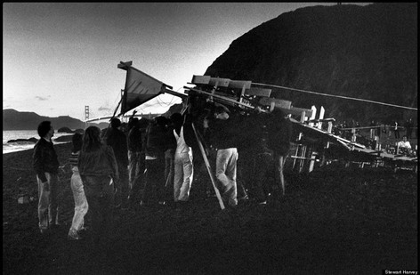
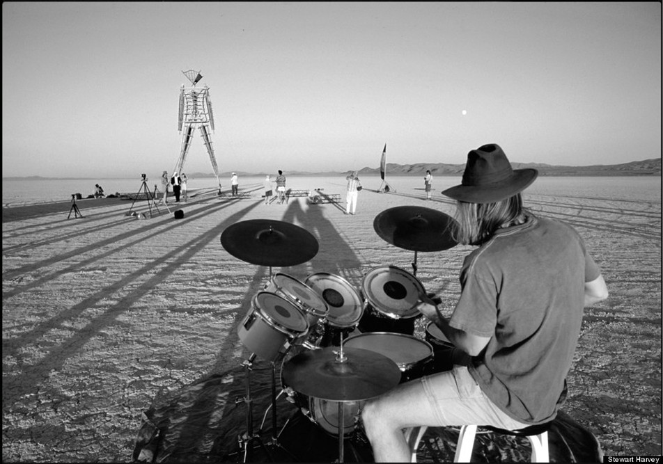
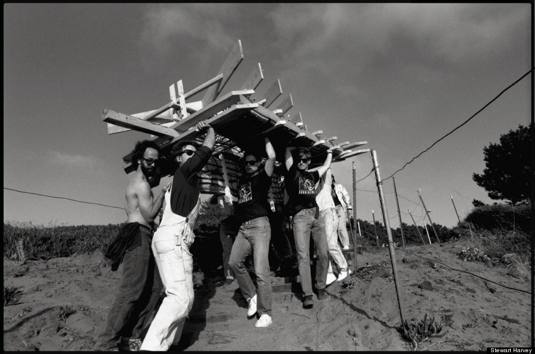

UN RITUAL EN LLAMAS
Una ciudad efímera en medio del desierto.
Donde el arte, el fuego y lo inesperado toman forma.
No se trata de mirar: se trata de vivirlo.
HISTORIA



Una ciudad efímera en medio del desierto.
Donde el arte, el fuego y lo inesperado toman forma.
No se trata de mirar: se trata de vivirlo.